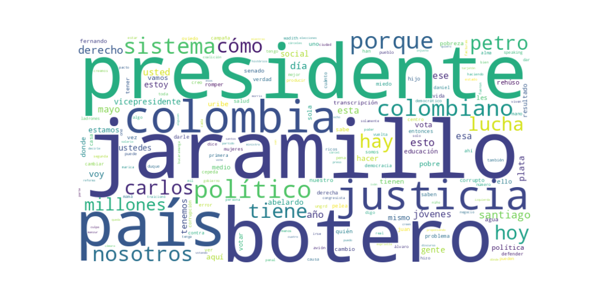

Seguidores: 203,412
Análisis de Comunicación del Candidato Presidencial
1. Perfil de Comunicación: El candidato adopta un estilo de comunicación predominantemente informal, directo y visceral, diseñado para resonar en plataformas digitales y con un público joven o desencantado. Utiliza un lenguaje popular, coloquial y, en ocasiones, grosero o confrontacional ("hijo de puta", "marica", "bandidos"), buscando romper con la corrección política tradicional. Se presenta como cercano, auténtico y "uno más del pueblo", enfatizando su origen humilde y su historia de esfuerzo personal. Este enfoque busca crear una conexión emocional fuerte y una imagen de franqueza radical.
2. Temas Principales: * Lucha contra la Corrupción y el Establecimiento ("El Sistema"): Es el eje central de su discurso. Lo aborda con acusaciones directas a figuras de todos los sectores (Petro, Uribe, Cepeda, de la Espriella), usando casos concretos como el de la UNGRD o Wadith Manzur. Ejemplo: "Hay que empezar dándole justicia a los poderosos!!" y constantes referencias a políticos como "ladrones" o "bandidos con corbata". * Justicia Social y Desigualdad: Vincula la pobreza y la falta de oportunidades directamente a la corrupción del sistema. Aborda temas como el salario mínimo, el acceso a la educación superior (criticando al ICETEX y a Colfuturo) y la inseguridad alimentaria. Ejemplo: "Mi lucha es por la desigualdad. Mi lucha es por la pobreza" y la mención recurrente a los "7 millones de colombianos que comen una sola vez al día". * Seguridad y "Mano Dura": Propone una reforma penal y penitenciaria extremadamente dura. Aboga por condiciones carcelarias severas ("que no vea la luz del día", "comer una sola vez al día") y sugiere reinstaurar la pena de muerte para corruptos. Ejemplo: "El que viole, el que mate, el que extorsione no puede seguir viviendo mejor adentro que afuera". * Crítica a la "Política Tradicional": Deslegitima por igual a los gobiernos de izquierda (Petro) y de derecha (Uribe, Duque, Centro Democrático), presentándolos como dos caras de la misma moneda corrupta e ineficaz. Ejemplo: "Estos políticos de izquierda, nos salieron iguales. De desconectados. A los políticos de derecha. Ponen sus intereses particulares. Sobre las necesidades del pueblo."
3. Tono y Sentimiento Dominante: El tono es abrumadoramente crítico, confrontacional y de denuncia. Predomina la indignación y la rabia contra el "sistema". Aunque hay destellos de esperanza y propuesta (encarnada en la fórmula Botero-Cuevas como la "salida"), el sentimiento central es de rebelión y hartazgo. Busca canalizar el descontento popular hacia una ruptura radical con el statu quo.
4. Palabras Clave de Poder: * "Romper el Sistema" / "RomperElSistema": Su eslogan y hashtag central. Define toda su propuesta como una destrucción del orden actual. * "Justicia" (vs. "Corrupción"): La justicia es el antídoto prometido contra la corrupción que identifica en todas partes. * "Botero Presidente" / "Carlos F. Cuevas Vicepresidente": Repetición ritualística para fijar la fórmula en la mente del elector. * "Los pobres" / "El pueblo" / "Los jóvenes": Colectivos a los que dice representar frente a "los poderosos", "los políticos" y "los ricos". * "Resultados" (vs. "Discurso"): Desprecia la retórica política y promete acciones concretas y eficaces. * "Mano dura": Vinculado específicamente a su propuesta de seguridad y justicia penal.
5. Conclusión Estratégica: La estrategia de comunicación del candidato está diseñada para capturar el voto de protesta y desencanto, apelando a un electorado joven y de clases populares frustrado con la política tradicional. Su discurso, crudo y emocional, busca evocar rabia, identificación y un sentido de rebelión legitimada. Se posiciona no como un político más, sino como la voz "auténtica" de los olvidados, ofreciendo una purga del sistema mediante una justicia implacable. El mensaje central es que la solución no está en reformar el sistema, sino en destruirlo y reemplazarlo, con ellos como los instrumentos de esa venganza popular y restauración del poder al "pueblo".
Reporte de Análisis Estratégico: Corpus del Éxito en Redes Sociales
1. Resumen del Patrón de Éxito: El éxito se basa en una comunicación rupturista, visceral y de confrontación directa, enmarcada en un relato de "romper el sistema". Lejos del discurso pulido y técnico, el candidato adopta un tono callejero, emocional y de denuncia furibunda, combinando indignación moral con un lenguaje crudo y cercano. La fórmula es: identificar un abuso o hipocresía del "establishment" político (de cualquier signo), expresarlo con rabia y lenguaje popular, y posicionarse como la única voz auténtica y valiente que se atreve a decirlo.
2. Tácticas de Comunicación Clave: * Conflicto y Polarización Deliberada: Define enemigos claros y los ataca con nombres propios y epítetos contundentes ("homofóbico", "defensor de corruptos", "políticos de izquierda/derecha desconectados", "marica" como insulto político). No busca consenso, sino exacerbar el resentimiento contra la clase política tradicional. * Apelación a la Justicia e Indignación Moral: Evoca una profunda frustración con un sistema percibido como injusto, corrupto e impune ("las cárceles son hoteles", "la justicia tarda", "nos roban, nos engañan"). Transforma problemas complejos en relatos simples de víctimas (el pueblo) y villanos (la élite política y corrupta). * Descrédito por Resultados (Anti-Discurso): Desarma a sus oponentes no debatiendo ideas, sino descalificando su gestión con la pregunta "¿y los resultados?". Ridiculiza el "discurso" o la "lucha" si no van acompañados de logros tangibles, posicionándose como pragmático y efectivo. * Lenguaje Populista y de Calle: Utiliza un registro lingüístico deliberadamente no institucional: vulgarismos controlados ("marica", "loco mierda"), frases hechas ("póngase los pantalones"), y un ritmo de habla rápido y apasionado. Esto crea una ilusión de cercanía y autenticidad, rompiendo con la solemnidad política.
3. Temas de Mayor Resonancia: * Corrupción e Impunidad: Casos específicos como la UNGRD, la captura de Wadith Manzur, y la denuncia de la corrupción como sistema. * Fracaso de las Instituciones: Crítica al sistema de salud, al sistema carcelario ("hoteles cinco estrellas"), y a la justicia lenta. * Descrédito Total de la Clase Política: Ataque transversal a figuras de "izquierda" (Petro, Corcho) y "derecha" (Cepeda, políticos tradicionales), presentándolos como dos caras de la misma moneda de ineptitud y desconexión. * Seguridad y "Mano Dura": Rechazo absoluto a la negociación con "bandidos", abogando por castigos severos y cárcel real.
4. Perfil de la Audiencia Implícita: Se dirige a un electorado joven y/o profundamente desencantado, que siente rabia y desprecio hacia la política tradicional. Es una audiencia que valora la "autenticidad" sobre la corrección, la acción sobre el discurso, y que se siente identificada con un mensaje de rebeldía contra todo el "sistema". No busca convencer a indecisos tibios, sino movilizar y energizar a una base frustrada que cree que todos los políticos son iguales.
5. Conclusión Estratégica: La clave fundamental de su poder es la performatividad de la ruptura. Su discurso no es solo un mensaje político; es una performance donde él encarna la rabia del ciudadano común. Lo que lo hace potente y diferente es que no pide un voto de confianza, sino un voto de desahogo. No promete gobernar para todos, sino para "romper" con los que, según su relato, han traicionado a todos. Su fuerza no está en un programa detallado, sino en su capacidad de canalizar el descontento en un personaje político que parece hablar desde la gente, no a la gente, usando su mismo lenguaje de indignación. El riesgo estratégico es que este modelo, altamente efectivo para movilizar una base, puede tener un techo de crecimiento al resultar alienante para sectores que buscan propuestas constructivas o un tono conciliador.

Caption: La democracia la perratearon, democracia es que las personas puedan participar en el grupo virtuoso de la sociedad. @santiagobotero.jaramillo #romperelsistema⚒️ #carlosfernandocuevas
Likes: 3,220 | Comentarios: 5 | Reproducciones: 1,864
Ver en InstagramCaption: Ustedes puedes creer a al sindicado lo dejaron libre? Solo por que la captura no fue correcta.! @jaimelaucore @danielrestrepo @ivancacino @santiagobotero.jaramillo #colombia #elecciones2026 #romperelsistema⚒️ #carlosfernandocuevas
Likes: 8,073 | Comentarios: 83 | Reproducciones: 41,038
Ver en InstagramCaption: Se logró la curul afro con la votación más alta de la historia. Me siento orgulloso de que los jóvenes boteristas hayamos sido parte de esta lucha. @odbenavidesa @miguelpolopolo @delaespriella_style @santiagobotero.jaramillo #romperelsistema⚒️ #carlosfernandocuevas
Likes: 5,567 | Comentarios: 53 | Reproducciones: 40,340
Ver en Instagram